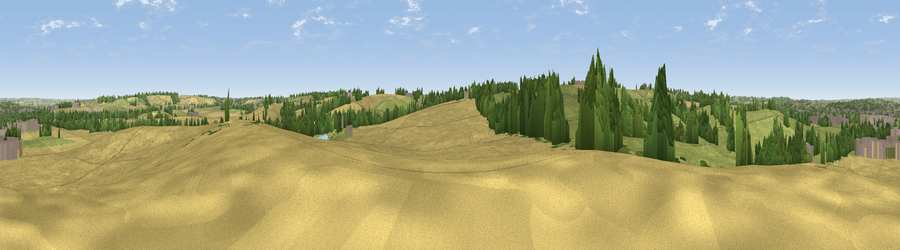

Viewpoint near Great Oxendon
#31715 in England · top 37% of its area beats it · near Great OxendonThe view, rendered

A 360° render of this exact spot computed from the terrain model, tree cover and land cover — summer colours, afternoon light, calibrated against photographs of famous viewpoints. Real trees, hedges and buildings will differ in detail.
The panorama
Grey silhouette: terrain skyline in each direction (720 bearings, Earth curvature and refraction included). Dashed green: skyline with trees (+15 m) and buildings (+8 m) as obstacles. Blue strip: how far the ground is visible on each bearing.
Where the view opens
Wedge length = distance to the farthest visible ground on that bearing (vegetation-aware). Rings at 10, 25 and 50 km.
What fills the view
44% cropland · 39% grassland · 12% woodland · 5% built-up
Angular shares of the visible panorama (visual magnitude), not map area. Landscape diversity 0.50 (0–1 Shannon).
Key numbers
More beautiful places nearby
The staircase of upgrades: each row has a higher view potential than everything closer. Driving times are estimates from straight-line distance, calibrated against real road routing — check an actual route before setting out.
| Place | Direction | Drive | Score |
|---|---|---|---|
| Viewpoint near Little Bowden | NE · 2 km | ~6 min | 46.3 |
| Viewpoint near Sibbertoft | WSW · 5 km | ~11 min | 48.3 |
| Viewpoint near Sibbertoft | WSW · 5 km | ~11 min | 48.8 |
| Viewpoint near Cold Ashby | SW · 13 km | ~23 min | 61.7 |
| Viewpoint near Burrough on the Hill | N · 27 km | ~44 min | 66.0 |
| Big Hill - Staverton Clump | SW · 30 km | ~47 min | 68.4 |
| Old John | NW · 34 km | ~52 min | 70.3 |
| Broombriggs Hill | NW · 37 km | ~55 min | 74.4 |
52.45551, -0.91574 · source: screening · position refined by local search. Computed location — check access rights before visiting.